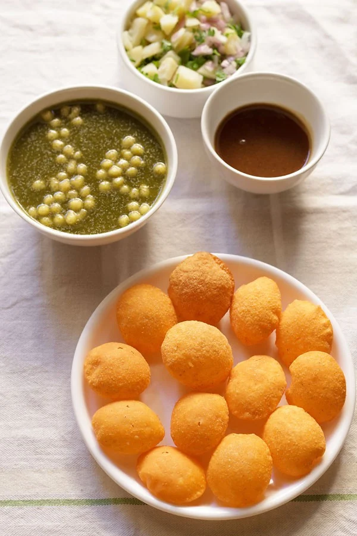
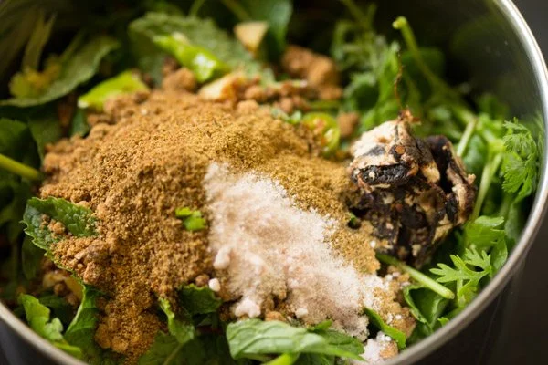
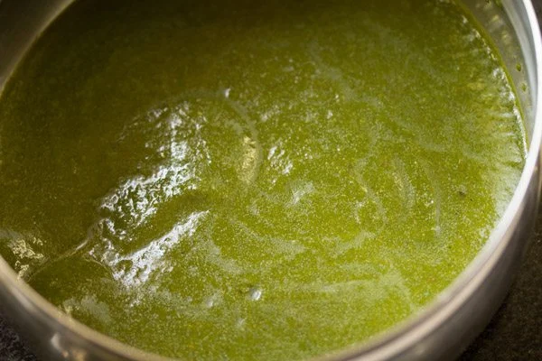
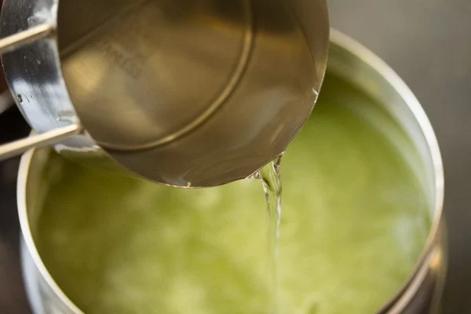
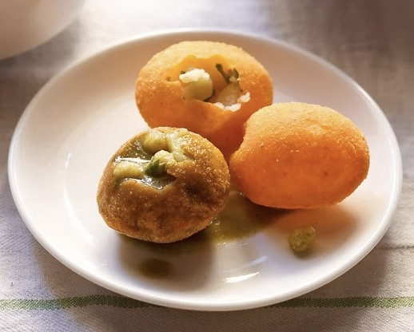

Pani Puri Recipe for Spice Lovers

Pani Puri or Golgappa is such a dish that has a great scope of experimentation and innovation. In bars of metro cities, a variation of it is served with Scotch or wine instead of spicy water. To impress and woo foreigners, people have come up with a dish called 'Pani Puri Tequila Shot!' All this has made the dish immortal and even though its history is complicated and questionable, there is no doubt that Golgappa brings the spicy and tangy side of India together.
The delicious recipe begins here:
-
Step 1: Add coriander leaves, mint leaves, ginger and green chili in a grinder or blender jar. For less spicy water you can add just 1 chopped green chilli.

-
Step 2: Add tamarind, 2 tbsp lemon juice, 2 tbsp jaggery, 2 chopped dates, 1 tsp cumin powder, 1 tsp chaat masala, and salt (amount of your liking)
 -
Step 3: Grind to a smooth consistency, keep adding water to smooth consistency.
 -
Step 4: Move paste to a bowl and keep adding water and mixing it until you reach the consistency of your liking. Make sure to not add too much water as the flavor reduces. Mix very well. Cover the pan and refrigerate the spiced water.
 -
Step 5: Boil 2 to 3 medium-sized potatoes. When warm, peel them and chop them into small cubes. You can add some finely chopped onions can also be added. I've added 1 small-sized finely chopped onion. Add 1 to 1.5 tbsp chopped coriander leaves. Then add quarter teaspoon red chili powder, 1 teaspoon chaat masala and 1 teaspoon roasted cumin powder. Also add salt to your liking. Lastly, stir and mix well, then keep aside.

-
Step 6: Keep everything ready before you start assembling the pani puri. The potato filling, pooris and the spiced water. Then, First crack the top of the puri with a spoon or with your fingers or thumb. Then stuff the potato filling in the puri with a spoon. And voila, there is the finished product!

Enjoy!